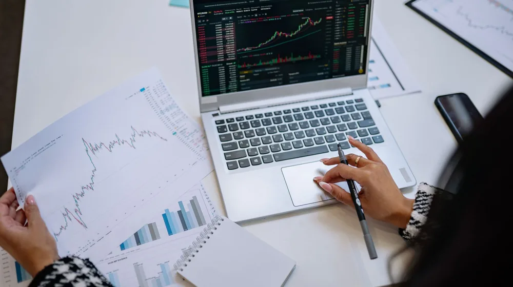

코스피 코스닥 차이, 초보 투자자도 쉽게 이해하는 핵심 비교
사진: Tima Miroshnichenko / Pexels (무료 이미지, 출처 표기)
코스피와 코스닥, 왜 나뉘었을까요?

코스피와 코스닥, 이름은 자주 들어봤지만 정확히 어떤 차이가 있는지 헷갈리셨나요? 막연하게 '큰 회사'와 '작은 회사'로 나뉜다고만 알고 계셨을지도 모릅니다. 초보 투자자가 두 시장의 특징을 명확히 이해하고 자신에게 맞는 투자 방향을 설정할 수 있도록, 핵심 정보만을 담아 정리했습니다.
한국 주식 시장은 크게 두 가지로 나뉩니다. 코스피(KOSPI)는 'Korea Composite Stock Price Index'의 약자로, 국내 증권 시장의 대표적인 지수이자 시장을 의미합니다. 주로 규모가 크고 안정적인 기업들이 상장되어 있습니다.
반면 코스닥(KOSDAQ)은 'Korea Securities Dealers Automated Quotations'의 약자로, 기술력이 뛰어난 중소·벤처기업의 자금 조달을 돕기 위해 설립된 시장입니다. 성장성이 높은 기업들이 주로 거래됩니다.
두 시장의 구분은 투자자들에게 기업의 특성과 위험도를 가늠할 수 있는 중요한 기준을 제공합니다. 이는 한국거래소(KRX)에서 효율적인 시장 운영과 투자자 보호를 위해 마련한 체계입니다.
코스피 vs 코스닥, 핵심 차이점 한눈에 보기
코스피와 코스닥은 상장 조건부터 시장의 특성까지 여러 면에서 차이를 보입니다. 2026년 8월 기준으로 주요 특징을 비교하면 다음과 같습니다.
코스피 시장은 오랜 업력과 탄탄한 재무구조를 가진 기업들이 많아 비교적 안정적인 투자처로 인식됩니다. 코스닥 시장은 성장 잠재력이 큰 만큼, 기업의 성패에 따라 주가 변동성이 클 수 있습니다.
각 시장의 대표적인 상장 기업 특징
코스피 시장에는 국가 경제의 주축을 이루는 기업들이 포진해 있습니다. 예를 들어, 삼성전자, 현대자동차, LG화학 등 각 산업 분야를 대표하는 대기업들이 이곳에서 거래됩니다. 이들 기업은 꾸준한 실적과 함께 배당을 통해 주주들에게 이익을 환원하는 경우가 많습니다.
코스닥 시장은 바이오, IT, 게임, 콘텐츠 등 미래 성장 동력을 갖춘 혁신 기업들이 주를 이룹니다. 셀트리온, 카카오게임즈, 에코프로비엠 등이 대표적입니다. 이들 기업은 당장의 수익보다는 미래 기술력이나 성장 가능성에 더 큰 가치가 부여됩니다.
따라서 코스피 기업들은 주로 전통 산업을 기반으로 안정적인 성장을 추구하며, 코스닥 기업들은 새로운 기술이나 트렌드를 선도하며 고위험 고수익을 지향하는 경향이 짙습니다.
초보 투자자를 위한 시장 선택 가이드
주식 투자를 처음 시작하는 분이라면 자신의 투자 성향과 목표를 명확히 하는 것이 중요합니다.
- 안정적인 투자를 선호한다면 코스피: 비교적 변동성이 낮고 기업 정보 접근성이 높은 코스피 대형주 위주로 시작하는 것을 권합니다. 꾸준한 배당을 통해 장기적으로 자산을 불리는 전략이 적합할 수 있습니다.
- 고위험 고수익을 추구한다면 코스닥: 높은 성장 잠재력에 베팅하고 싶다면 코스닥 시장을 고려할 수 있습니다. 다만, 기업 분석에 더 많은 시간과 노력이 필요하며, 손실 위험도 함께 감수해야 합니다.
초기에는 소액으로 양 시장의 상장지수펀드(ETF)에 투자하여 시장 흐름을 익히는 것도 좋은 방법입니다. 특정 산업이나 시장 전체에 분산 투자하는 효과를 얻을 수 있습니다.
성공적인 투자를 위한 추가 고려사항
어느 시장에 투자하든 분산 투자는 필수입니다. 한두 종목에 모든 자산을 집중하는 것은 매우 위험한 투자 방식입니다. 여러 산업과 기업에 나누어 투자함으로써 위험을 줄일 수 있습니다.
기업 분석 능력을 키우는 것도 중요합니다. 재무제표를 읽고, 사업 보고서를 통해 기업의 성장성을 판단하는 연습을 꾸준히 해야 합니다. 시장 상황은 항상 변합니다. 뉴스나 경제 지표를 꾸준히 확인하고, 거시 경제의 흐름을 이해하려는 노력이 필요합니다.
무엇보다 중요한 것은 '자신만의 원칙'을 세우고 지키는 것입니다. 남을 따라 투자하기보다는 충분한 학습과 분석을 통해 스스로 결정하고 책임지는 자세를 가져야 합니다. 정확한 사항은 투자 전 금융 전문가와 상담하거나 한국거래소 공식 홈페이지에서 다시 확인하시길 권장합니다.
🔗 이 글도 함께 보면 좋아요: 코스피 하락, 불안한 투자자라면 꼭 알아야 할 3가지 핵심 원인